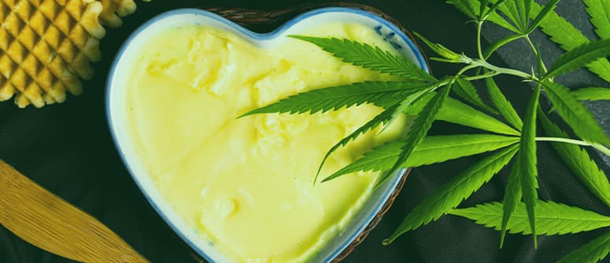
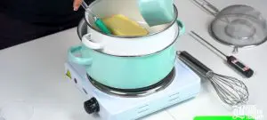
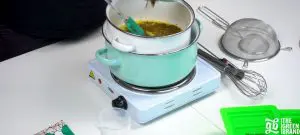
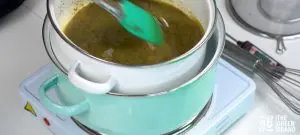
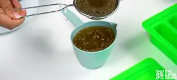

Mantequilla Cannabica

Descripcion
Hoy presentamos una receta muy fácil y sencilla de hacer. Cómo hacer
mantequilla de marihuana. Ésta es imprescindible en nuestra cocina para
preparar cualquier receta con cannabis. La mantequilla de marihuana es una
buena alternativa para aquellas personas que quieran consumir cannabis sin
tener que fumar o vaporizar, tanto en uso medicinal como en uso recreativo
para darle un toque especial a nuestras recetas y disfrutar de nuestras
comidas de una forma diferente.
La mantequilla de cannabis es un producto que se obtiene al infusionar
mantequilla con cannabis, utilizando su compuesto psicoactivo, el
tetrahidrocannabinol (THC), y otros cannabinoides como el cannabidiol
(CBD). Se utiliza principalmente en la preparación de comestibles que
contienen cannabis, como galletas de marihuana, brownies o cualquier otro
tipo de receta que implique mantequilla como ingrediente.
Ingredientes
- 250g de mantequilla.
- 50ml de agua
- 5 cogollos
Paso a Paso....
-
Lo primero de todo será grindear la marihuana, para
mejorar la reacción al mezclarse con la mantequilla. Para ello se puede
usar una batidora. Después se hierve la materia vegetal en agua a un
fuego muy suave durante 20 minutos. De esta manera,
conseguiremos quitarle el sabor a clorofila y casi todas las impurezas,
dejándolo listo para mezclarlo con la mantequilla.
-
Una vez se tiene toda la materia vegetal ya limpia de impurezas, el
siguiente paso será hervir la mantequilla en agua al
fuego mínimo, siempre evitando que esté en ebullición (recomendamos
mantequilla, nosotros hemos probado con mantequilla y margarina y el
resultado es muy diferente).

-
Cuando la mantequilla esté completamente derretida, se procederá a
agregar la materia vegetal. Habrá que tenerlo siempre
al fuego mínimo, y no dejar de remover en ningún momento, así se puede
ver cómo poco a poco la mantequilla va cogiendo un color más verdoso.

-
Habrá que remover durante unos 30 minutos, hasta que
tengamos una mantequilla uniforme y homogénea.

-
Una vez se esté seguro de que nuestra hierba ha soltado todo su jugo y
que ya se tiene una pasta homogénea y verdosa, es el
momento de filtrar la mantequilla en el recipiente con un colador para
asegurarse de que no nos queda ningún tipo de rastrojo.

-
Habrá que dejarlo enfriar a temperatura ambiente un par
de horas, para después meterlo en la nevera y dejarlo reposar 24h. Así
quedará una capa de mantequilla flotando sobre el agua, con una textura
muy similar a la que compramos, pero de un color mucho más verde. Al día
siguiente
se saca con cuidado la capa de mantequilla de cannabis del
recipiente.

-
Una vez esté terminada, se puede almacenar en la nevera, donde puede
durar unas 2 semanas o así antes de empezar a ponerse mala. En caso de
que se quiera que dure más, se puede guardar en el congelador y usarla
cuando convenga. Por ello, es aconsejable
cortarla en trozos antes de congelarla, para poder
descongelarla cuando se necesite usar un poco.
Inicio